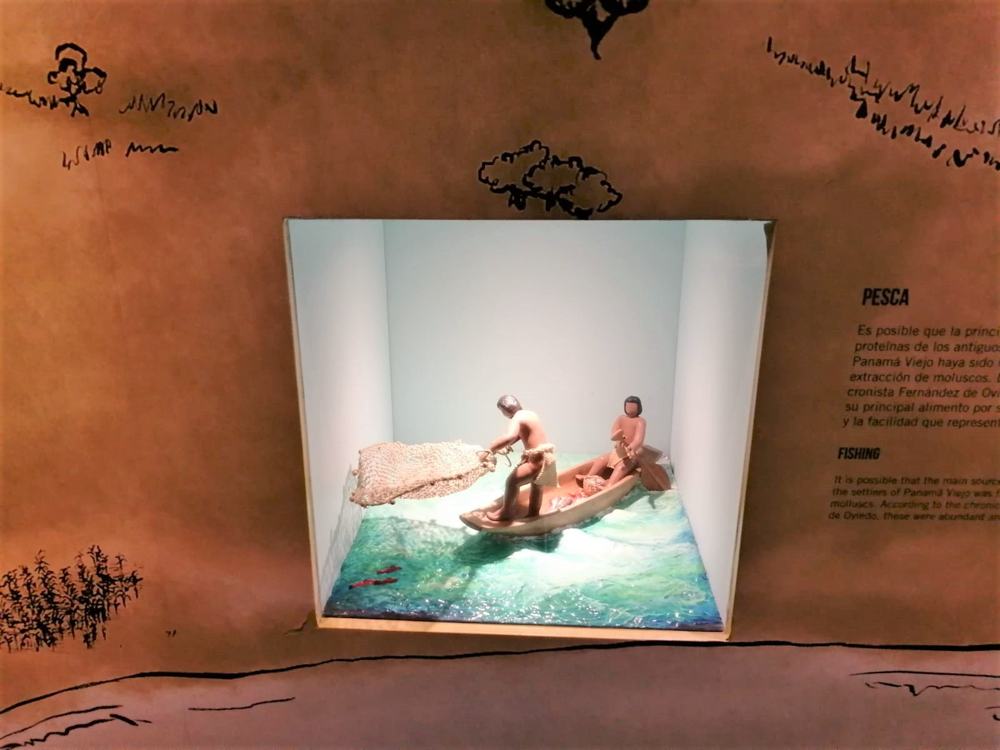
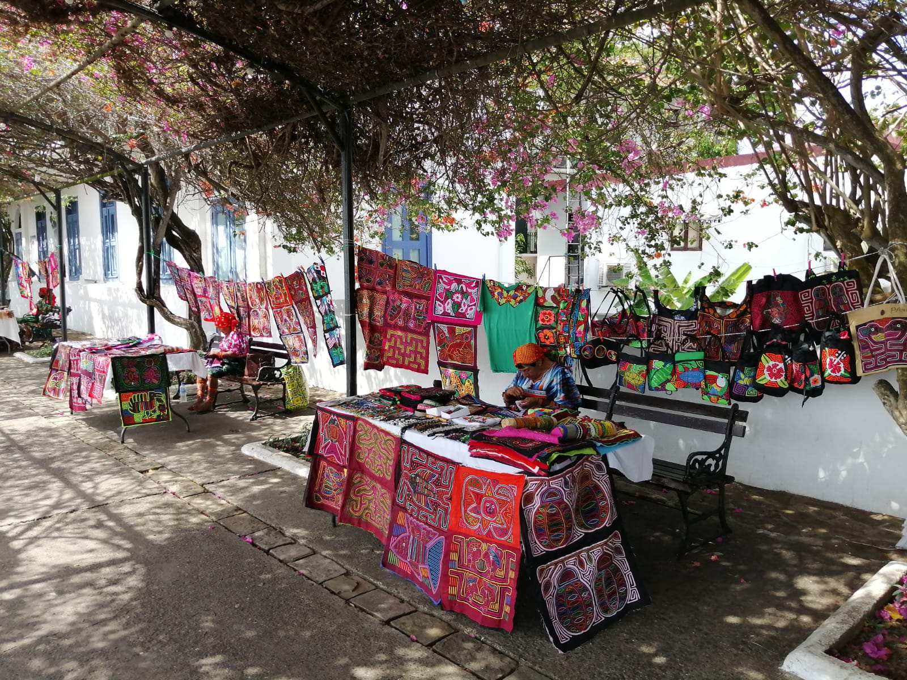

Panamá y sus atractivos, más allá de un canal
 Turistas en el Casco Antiguo juegan domino. Foto: Alejandro Reyes
Turistas en el Casco Antiguo juegan domino. Foto: Alejandro Reyes
Conocido comúnmente como “Puente del mundo y corazón del universo” por su posición geográfica en el centro de América y su misión de unir a través de un canal los océanos Atlántico y Pacífico, para el desarrollo del comercio mundial, Panamá es una nación que nació, creció y se desarrolló bajo la influencia de un crisol de razas.
Para adentrarse en su historia, primero es importante resaltar la formación del istmo de Panamá, que ocurrió hace millones de años y tuvo consecuencias importantes para el mundo, cambiando las corrientes de los océanos, el clima, creó el mar Caribe llenándolo de arrecifes de coral y otros eventos, como describe Anthony Coates, científico del Instituto de Investigaciones Tropicales Smithsonian, en un video instructivo del Biomuseo.
Según Coates, por mucho tiempo los científicos estuvieron de acuerdo en que el istmo se completó en tres millones de años, uniendo el Norte y el Sur, un proceso en que las especies se cruzaron en ese camino.
En 2019, científicos de la Universidad de Cardiff, en el Reino Unido, publicaron nuevos estudios en Scientific Report, que establecen que el istmo pudo verse favorecido por el aumento de los volcanes hace unos 25 millones de años.
Dicha investigación sugiere que la formación de los volcanes pudo haber jugado un papel importante, para que el istmo ascendiera sobre el nivel del mar.
Los historiadores panameños Juan B. Sosa y Enrique J. Arce, describen en su “Compendio de historia de Panamá” (1911), que cerca de sesenta tribus, establecidas en diferentes puntos, habitaban el istmo durante el periodo de la conquista, estimando una población total de 400,000 habitantes.
 Pescadores en antigua aldea que reposa en el Museo Panamá Viejo. Foto: Alejandro ReyesDescriben también que el nombre Panamá procede de una primitiva lengua indígena y sobre su significado hay variadas opiniones. Algunos autores dicen que es el nombre de un cacique, otros que significa tierra o lugar de mariposas, que corresponde a un árbol abundante donde floreció la antigua ciudad y que así se llamaba un caserío de pescadores indígenas.
En su cuarto viaje, Cristóbal Colón se abrió paso por algunas de sus costas y se dice que dio nombre a la que actualmente es una de sus provincias, Veraguas.
Fechas importantes de Panamá de Alejandro ReyesCon una superficie de 74,177.3 km2, el país está conformado por diez provincias y tres comarcas: Bocas del Toro, Coclé, Colón, Chiriquí, Darién, Herrera, Los Santos, Panamá, Panamá Oeste, Veraguas, comarca Guna Yala, comarca Emberá Wounaan y comarca Ngäbe Buglé.
(Colocar el mapa con la población de Panamá por provincias TEREZA)Según datos de la Contraloría General de la República, como consecuencia de la posición del istmo y de variadas circunstancias históricas, su población se compone de diferentes grupos humanos.
Los grupos no indígenas: hispano-indígena, que representa uno de los grupos humanos de mestizaje más importantes; población afro colonial, descendientes de esclavos africanos traídos durante la colonización española; población afroantillana descendientes de trabajadores que llegaron para la construcción del Canal; otros grupos étnicos, como los de origen chino.
Los grupos indígenas apenas representan el 12.3%, constituidos en: ngäbe, buglé, naso tjërdi, bri-bri, guna, emberá y wounaan.
Economía estable
Datos del Programa de las Naciones Unidas para el Desarrollo (PNUD), estiman que la economía de Panamá, dolarizada, es una de las más estables de América y entre sus principales actividades se encuentran las financieras, turísticas y logísticas, que representan el 75% del Producto Interno Bruto (PIB).
Aunque por la pandemia el PIB de Panamá bajo a -17,9%, para 2022 el pronóstico de crecimiento es de 6,5, según el Banco Mundial.
 Mujeres Gunas venden sus artesanías en el Casco Antiguo.Foto: Alejandro Reyes .Desde la época colonial Panamá ya tenía una importancia en la logística internacional debido a su posición geográfica, lo que se ha mantenido actualmente, catapultando sus enormes ventajas.
El Canal de Panamá, ha doblado su capacidad tras la construcción del nuevo juego de esclusas y es otro gran motor de la economía. De acuerdo con el Banco Interamericano de Desarrollo (BID), aporta 6,8% al PIB panameño, como un punto del transporte que se asocia al 6% del comercio del mundo.
Turismo y desarrollo
En la actualización del Plan Maestro de Desarrollo Turístico Sostenible de Panamá (2020-2025), se apuesta a que el impulso de este sector beneficie a lo que el actual gobierno del presidente Laurentino Cortizo, describe como los “5 Panamá” (moderno, barrios, clase media, rural agrícola y comarcal).
La visión de este documento es que Panamá sea reconocida como “un destino turístico sostenible de clase mundial, gracias a su extraordinaria riqueza y diversidad de su patrimonio natural y cultural, y a la calidad de sus servicios”.
La variada oferta turística de Panamá deriva de distintos destinos que ofrecen oportunidades y experiencias como: naturaleza, playas, montañas, aventuras, pesca, cultura, patrimonio, historia, agroturismo, eventos, reuniones y compras.